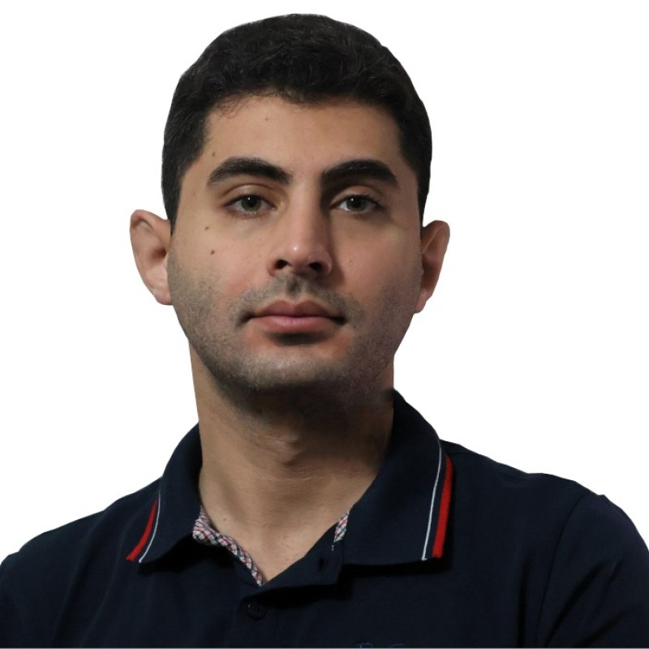

Ph.D. in Computer Science
George Mason University · Fairfax, VA
August 2022 — Present GPA: 3.81/4.0

Ph.D. Student & Graduate Research/Teaching Assistant
Computer Science Ph.D. student at George Mason University working on real-time and embedded systems, systems security, and multiprocessor scheduling. I design algorithms, mathematical models, and large-scale simulation frameworks for safety-critical real-time embedded systems.
About
My research focuses on real-time and embedded systems, systems security, and multiprocessor scheduling. My current work focuses on mitigating schedule-based side-channel attacks through security-aware workload distribution across multiprocessor systems. Earlier research applied reinforcement-learning-based optimization for performance objectives including energy-, thermal-, and reliability-aware scheduling.
I work across algorithm design, mathematical modeling, simulation, and systems implementation, with experience in C/C++, Python, Java, embedded platforms, computer architecture tools, and hardware-level debugging.
Technical Skills
C/C++, Java, Python, SQL, MATLAB, Rust, Verilog, VHDL, Bash, Embedded C, Linux Device Driver Development, JTAG, UART
Git, MySQL, NumPy, Pandas
Reinforcement Learning, Genetic Algorithm
SLURM, CMake, Gem5, McPAT, HotSpot, Quartus, Xilinx, Design Compiler, Hspice, Pspice
Raspberry Pi, ARM Cortex, AVR, STM, NXP LPC, DE1, DE2, Spartan
Real-Time Embedded Systems Scheduling, Operating Systems, Systems Security, Reliability-, Power-, and Thermal-Aware Optimization, Machine Learning for Systems Optimization, Systems Architecture & HW/SW Co-Design, Hardware-Level Debugging
Persian, English, German (Basic)
Education
George Mason University · Fairfax, VA
Sharif University of Technology
Ferdowsi University of Mashhad
Experience
Publications
Awards & Honors